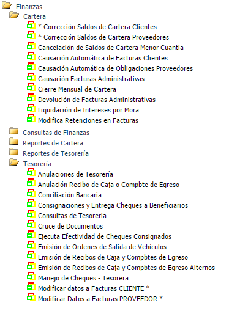

| AAAAAAAAAAAAAAAAAAAAAAAAAAAAAAAAAAA |
|---|
|
MANUAL
MODULO FINANZAS SISTEMA ECAS OBJETIVO EL Modulo de Finanzas controla los flujos de dinero a través de los diferentes documentos que constituyen
la CARTERA de CLIENTES, las OBLIGACIONES con PROVEEDORES, las OBLIGACIONES
FINANCIERAS con entidades crediticias, causación de las FACTURAS
ADMINISTRATIVAS tanto para clientes como para proveedores, el flujo y control
de los medios o documentos de recaudo y pago. Administrar el flujo de fondos, definir inversiones, controlar
las cuentas bancarias y los documentos en caja (post-fechados, devueltos, de
respaldo) según sus vigencias y vencimientos. El sistema de Finanzas está compuesto por los sub-sistemas
de: ·
Cartera de
Clientes o
cuentas por Cobrar ·
Obligaciones
(cartera) con proveedores o Cuentas por Pagar
·
Tesorería Caja, cuentas
en bancos, créditos bancarios, manejo de chequeras  PROCESO La actividad inicial y básica del Módulo
de Finanzas, consiste en definir la parametrización de todos los documentos que
conforman el módulo. Los parámetros son la información fundamental básica y necesaria
para la operación del sistema y es responsabilidad del jefe del área, quien
debe conocer y definir cada ítem del menú. Esta información es la usada en el
proceso normal del sistema por los usuarios. En la actividad diaria de la empresa, se
generan los documentos de cartera de clientes y obligaciones con proveedores, como
resultado de la operación de los sistemas de Inventarios, talleres de
servicios, vehículos, pasajes y demás sistema que la empresa está operando que
componen el sistema ECAS/WEB. |
| ALGO |